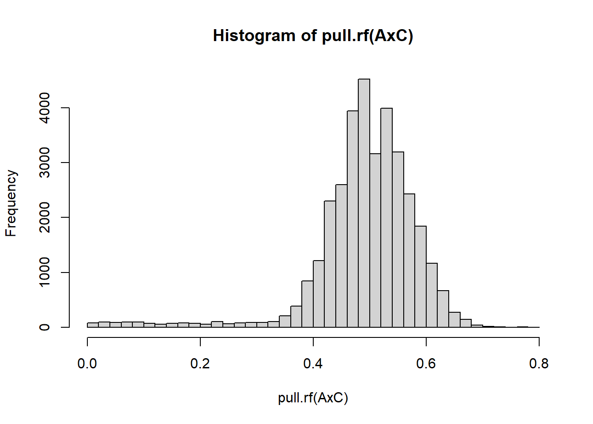
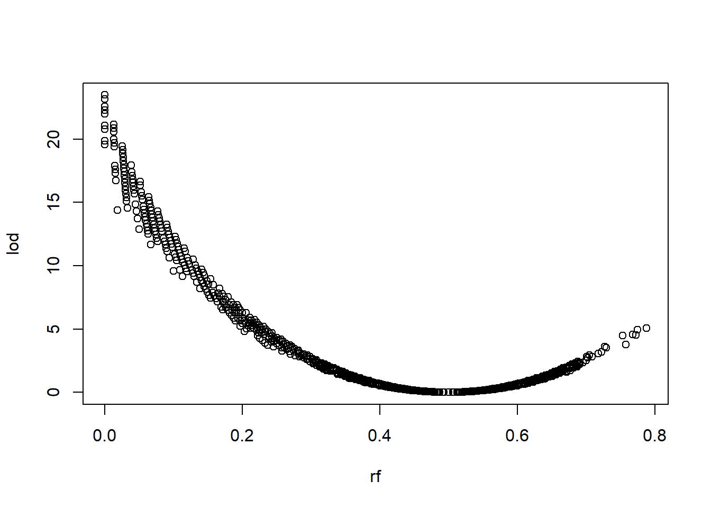
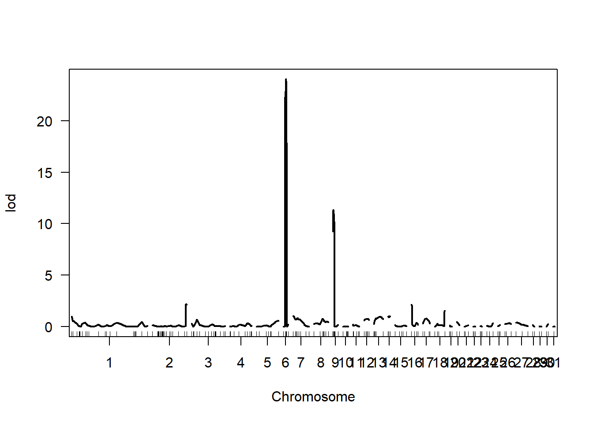
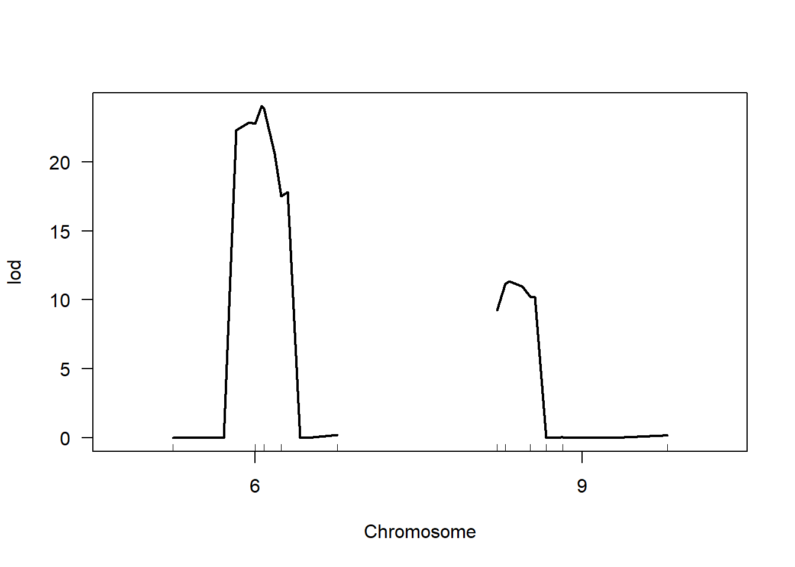

Chapter 10 Mapping Markers and Quantitative Trait Loci.
Mapping Markers and Quantitative Trait Loci with R/qtl (and ASMap)
10.1 Introduction
There are several excellent mapping programmes available. A list of some, suitable for plant breeders is found on the R/qtl homepage. Software for creating maps of markers is less common than software for mapping QTL and most has specific limitations in terms of speed, population types, handling of missing data and so on. The gold standard is Joinmap, but this is expensive. In fact it’s so expensive that they don’t put the price on their web site.
For this course we are going to use R/qtl. This is a popular, easy-to-use and well supported package and there is a useful book on QTL mapping associated with it: “A Guide to QTL Mapping with R/qtl.” Details are available here. There is also an R/qtl web site, which includes much useful information, including tutorials and there is a discussion group. A quick tour of R/qtl can be found here. R/qtl was originally written to map QTL and not to create linkage maps of markers. However, it will create marker maps, although it can be slow compared to alternative programs. However, in this tutorial we shall use R/qtl both to create a linkage map and then to map QTL onto that map.
A rewritten version, R/qtl2 is now available, which is faster and better able to handle large data sets and complex cross-designs, including MAGIC. It also offers an automated marker thinning option for kinship matrix estimation (hooray!) and includes options to go beyond QTL detection to searching genomic databases for candidate SNP variants. It is available from here but not yet on CRAN. We are currently trying it out in our work at NIAB.
Also relatively new, and available through CRAN, is the R package ASMap. This creates marker maps for basic biparental populations, but you would have to use R/qtl to map traits. The description of it is here. The R manual for the package can be found here. Its main benefit over R/qtl is in utilising a more advanced, much faster algorithm for clustering and marker ordering. We shall also have a brief look at this too.
10.2 Constructing a genetic map
Most (all?) statistical packages for mapping markers start with a square matrix of recombination fractions. From this two-dimensional matrix, markers are partitioned into linkage groups by some form of clustering. Hopefully each cluster or linkage group belongs uniquely to a single chromosome. However, stringent significant thresholds must be employed in this clustering to reduce the number of falsely linked markers. As a result, a numbers of markers are often left unlinked or in clusters with only a very small number of members. In practice, therefore, it is common to identify more linkage groups than chromosomes. With modern genomic resources, these linkage groups can often be subsequently linked to specific chromosomes.
Following clustering, for each linkage group in turn, markers are projected from the two-dimensional array of recombination fractions into a linear order. There are various methods for carrying out this linearization. Usually, as a final stage, the linear order is tested by some form of perturbation of the initial order to see if a new order can be found which is judged better: reducing the total number of recombinations required to create the observed set of chromosomes for example.
The data we are going to analyse are from a DH mapping population in UK winter wheat: Avalon x Cadenza. Data were produced as part of an experiment to map wheat soil borne mosaic virus.
10.2.1 Formatting and reading in the data
Data are in the file: “AxC_R.xlsx.” Note:
Row 1: in separate cells, column names for ID, phenotypes, markers.
Row 2: in the cells immediately under the marker names, the chromosome identifier for that marker. Here that identifier is 50 for all markers (we could have used anything except x – reserved for sex chromosomes. If we had a pre-existing map we wished to use, obviously this identifier would be for the chromosome or linkage group.
Row 3: is missing here as it is not required. But if we were using a pre-existing map, then on this line, under its marker name, would be the position in cM for that marker (see the QTL mapping tutorial). Data are read in Haldane map units. You will see this after we have created a map and exported our data with the new map to a file.
Coding for marker data follows that used by Mapmaker, one of the original pieces of mapping software (slow by current standards and hard to use):
genotype default coding
AA A homozygous from parent A
Aa H heterozygous
aa B homozygous from parent B
A_ D for dominant markers, homozygous in parent A
a_ C for dominant markers, homozygous in parent BThis is the basic coding. It has been expanded to deal with more complex cross types which R/qtl can also handle.
Should we drop any markers? Should we drop any individuals?
The dataset we are using has already been through a QC process which has removed really bad markers and individuals. This can be done without a map by looking at marker failure rates and segregation distortion – over markers and over individuals. Some of these checks can be done by the mapping software, but they are easy to do in Excel too:
To calculate a chi-sq with 1 df to test for 1:1 segregation you can use the quick formula:
\[(A-B)^2/(A+B)\]
This is just a simplification of the usual \(Σ(O-E)^2/E\) (O= observed numbers, E = expected numbers) for a chi-sq test. It only applies when there are two classes and the expected are in the ratio 1:1. I prefer to do this prior to running any mapping programs but it is possible within R/qtl.
After you are happy with the data, then we read it into R. R cannot read these data directly from Excel or from the clipboard. First you must save the data as a csv file. This has already been done, to create the file AxC_R.csv.
Within R Studio, set the directory and load the package qtl. You will need to install from CRAN if you don’t have it already.
library(qtl)We can now read data in using the command read.cross.
AxC <- read.cross("csv", dir = "data", "AxC_R.csv", genotypes = c("A",
"B"), estimate.map = F)## --Read the following data:
## 78 individuals
## 186 markers
## 10 phenotypes
## --Cross type: bcAn option to note here is estimate.map=F. This is required to declare that we are not inputting a map with the data, You need the dir="data" in read.cross to declare the path to the file. However, you won’t have the directory ‘data’ on your computers. If you just want to call data from your working directory, like most of us do, just write this as dir="". You will want to be working in the same directory as the data, as we have done for previous tutorials.
Take a look at the output from reading the file in. The last line indicates that the cross has been identified as a backcross from the data format: because only two marker classes were found at each locus. In fact, the cross type is a doubled haploid population. For marker and trait mapping purposes this makes absolutely no difference. Do you know why not? Nevertheless, we can change the cross to dh as below:
class(AxC)[1] <- "dh"If you read in a file which already has a map with some of the markers mapped to the same position you will get a warning message. To avoid problems in analysing the data, R/qtl uses the command jittermap() to add a tiny fraction to every interval on chromosomes where this occurs. We would need to overwrite the original data, or otherwise save the output (e.g. AxC<-jittermap(AxC)) but there is no need to do that here.
10.2.2 A quick map!
Remember we have just read the data into the data table AxC. As with many R objects, the commands summary and plot give object specific details of the data contained within:
summary(AxC)## Doubled haploids
##
## No. individuals: 78
##
## No. phenotypes: 10
## Percent phenotyped: 100 94.9 100 100 100 100 100 100 100 100
##
## No. chromosomes: 1
## Autosomes: 50
##
## Total markers: 186
## No. markers: 186
## Percent genotyped: 96.1
## Genotypes (%): AA:50.2 BB:49.8plot(AxC)
Before we go into detail about creating a map, we shall first do so very quickly to show that this can be done simply and with only a few commands:
quick.map <- est.rf(AxC)
quick.map <- formLinkageGroups(quick.map, reorgMarkers = T)
quick.map <- orderMarkers(quick.map)
plotMap(quick.map)This should produce the map shown above, which doesn’t look bad, though we may wonder about the length of linkage group one, seemingly with some very large inter marker distances. While most mapping packages can probably produce maps as quickly and easily as this, it doesn’t mean that they are correct. It is worth understanding how and why they work so that you can better judge the quality of the map and seek improvements to it.
10.2.3 Estimating recombination fractions
First delete quick.map
rm(quick.map)Now, the first thing to do is estimate the recombination frequencies among all pairs of loci:
AxC <- est.rf(AxC)Note that we have directed the output of est.rf back to AxC to which it is added.
We can inspect the matrix of recombination frequencies. However, this is a large table, so we’ll just look at the top left hand corner:
pull.rf(AxC)[1:5, 1:5]## Aflp100.175 AFLP24 AFLP24.320 AFLP43-160Bp Aflp57.165
## Aflp100.175 NA 0.44594595 0.46052632 0.01351351 0.46666667
## AFLP24 0.44594595 NA 0.01369863 0.45833333 0.00000000
## AFLP24.320 0.46052632 0.01369863 NA 0.47945205 0.01351351
## AFLP43-160Bp 0.01351351 0.45833333 0.47945205 NA 0.46575342
## Aflp57.165 0.46666667 0.00000000 0.01351351 0.46575342 NARather fortuitously, you can see some very low recombination fractions and some indicating clear lack of linkage. Since we are working in R, we have access to all its other features. For instance, we can look at the distribution of recombination fractions:
hist(pull.rf(AxC), breaks = 40)
Does this help you put a threshold on recombination fraction at which you are willing to declare a pair of markers as linked? Generally, packages use a threshold on both recombination fraction and significance level. We can also extract the latter, as a LOD score:
hist(pull.rf(AxC, what = "lod"))Most marker pairs show no evidence of linkage and have a low LOD score. If we truncate the y axis the plot is a little more clear:
hist(pull.rf(AxC, what = "lod"), ylim = c(0, 200), breaks = 40)Are the recombination fractions and LOD scores telling us the same thing? After a bit of trial and error, we can plot one against the other:
plot(pull.rf(AxC, what = "rf")[, ], pull.rf(AxC, what = "lod")[,
], xlab = "rf", ylab = "lod")
1
What does this plot tell us? What do you think would be a good combination of cut-off parameters, and why?10.2.4 Forming Linkage groups
Next we want to allocate our markers to linkage groups. The command for this is formLinkageGroups. It has some options that we could experiment with:
max.rf = Maximum recombination fraction for placing two markers in the same linkage group. The default is 0.25.
min.lod = Minimum LOD score for placing two markers in the same linkage group. The default is 3.
reorgMarkers = If TRUE, the markers are organized into the inferred linkage groups. If FALSE, the output is a table indicating the initial chromosome assignments and the inferred linkage group partitions.
We want to add our chromosome assignments to AxC so reorgMarkers should be set to T.
test.linkage.groups <- formLinkageGroups(AxC, reorgMarkers = T,
verbose = T, min.lod = 3, max.rf = 0.25)## 10 of 186
## 20 of 186
## 30 of 186
## 40 of 186
## 50 of 186
## 60 of 186
## 70 of 186
## 80 of 186
## 90 of 186
## 100 of 186
## 110 of 186
## 120 of 186
## 130 of 186
## 140 of 186
## 150 of 186
## 160 of 186
## 170 of 186
## 180 of 186An easy way to look at the linkage groups created in test.linkage.groups is to use the command
plotRF(test.linkage.groups)Compare this with the unordered markers set in AxC
plotRF(AxC)2
Alter the min.lod and max.rf thresholds (try higher and lower) to see what difference this makes to the plots. Do the default values seem reasonable?Once you have decided on a threshold, you can save the linkage groups back to AxC using your own thresholds.
AxC <-formLinkageGroups(AxC,reorgMarkers=T, verbose=T,min.lod=??,max.rf=??)
10.2.5 Marker ordering
Next we must order markers within these linkage groups using the command orderMarkers(). This command also has some options we should experiment with:
use.ripple = If TRUE (the default), the initial order is refined by a call to the function ripple.
window = Indicates the number of markers to include in the sliding window of permuted markers for ripple (default is 7). Ripple can take a long time, especially with large number of markers in the window.
error.prob = Assumed genotyping error rate used in the final estimated map. Default is 0.0001. This can make a large difference: a double recombination between closely linked markers is more likely to result from genotyping errors.
First. Let’s try without rippling;
test <- orderMarkers(AxC, use.ripple = F)Plot the recombination fractions of the ordered markers and compare with the unordered (in AxC).
plotRF(test)plotRF(AxC)We can also plot a simple cartoon of our mapped markers:
plot.map(test)3
What do you think of the chromosome lengths and numbers in this map?10.2.6 Improving the map
There are three things we can do to try to improve the map:
Ripple; where the marker order within a defined window is perturbed to see if improvements are possible.
Take into account the probability of genotype errors directly in the ordering process. This may be worthwhile for this data set, where we know the quality of the genotyping was poor.
Clean the data of probable errors – eliminate improbable double recombinants.
We’ll have a look at ripple first. Only one chromosome at a time can be rippled, and the window size should not be too large since this can take a long time. Here are three different versions of the command:
chr1.ripple4 <- ripple(AxC, chr = 1) # ripple chr 1 with defaults (window=4)## 276 total orderschr1.ripple7 <- ripple(AxC, chr = 1, window = 7) # increase window size ## 52560 total orderschr1.ripple4.like <- ripple(AxC, chr = 1, method = "likelihood") # use likelihood## 276 total orders
## --Order 10
## --Order 20
## --Order 30
## --Order 40
## --Order 50
## --Order 60
## --Order 70
## --Order 80
## --Order 90
## --Order 100
## --Order 110
## --Order 120
## --Order 130
## --Order 140
## --Order 150
## --Order 160
## --Order 170
## --Order 180
## --Order 190
## --Order 200
## --Order 210
## --Order 220
## --Order 230
## --Order 240
## --Order 250
## --Order 260
## --Order 270The default method searches for orders which reduce the total number of recombinations. Using likelihood is better but takes longer.
You can examine the output directly but using summary is easier:
summary(chr1.ripple4)
4
Compare the three versions you have just made for chromosome 1. Has any version of ripple made an improvement? If so, which has worked best?Once we have identified an improved order, we can substitute it for the existing order using the command switch.order. Here is a worked example:
# Existing map
pull.map(AxC, chr = 1)## BArc142_5B BArc176_7B BArc74_5B dUpw115_5B dUpw398_7B eAACmCCG171
## 0 10 20 30 40 50
## eAACmCCG184 eAACmCCG408 eAACmCGA270 eAACmeCCC249 eACGmCGG220 eACTmCGG200
## 60 70 80 90 100 110
## eAGCmCTA340 eAGGmCTA120 eATTmCGG230 gwm213 gwm234_5B wmc517_7B
## 120 130 140 150 160 170# switch order (make sure you choose the correct row)
AxC.v2 <- switch.order(AxC, chr = 1, order = chr1.ripple7[2,
])
# Compare new order with the initial order
pull.map(AxC.v2, chr = 1)## BArc142_5B BArc176_7B BArc74_5B dUpw115_5B dUpw398_7B eAACmCCG408
## 0.00000 77.79435 80.52102 109.50827 183.34461 187.46286
## eAACmCCG171 eACGmCGG220 eAACmeCCC249 eAACmCGA270 eACTmCGG200 eAACmCCG184
## 190.09164 226.04541 254.62921 264.18371 265.56842 282.12582
## eAGCmCTA340 eAGGmCTA120 eATTmCGG230 gwm213 gwm234_5B wmc517_7B
## 287.50267 322.18080 359.48948 394.33618 432.34606 487.79182# Tidy up
rm(AxC.v2)We don’t have to type in the new order, we can select the desired order as a row from the ripple output. We can also return the new order to our cross directly, which is what we want to do here:
test <- switch.order(test, chr = 1, order = summary(chr1.ripple7)[2,
])We could go through every linkage group in turn like this. However, it is also possible to use the option use.ripple =T directly within orderMarkers which would be more efficient in general use.
Now we can examine the effect of different assumed error rates on the data. The default in R/qtl is 0.0001 which is probably too low for most genotype platforms; at NIAB we achieved this only by extensive manual curation of SNP array data. 0.001 would be a good target to aim for, but 0.01 is probably more realistic for this data set, where it still represents an average of less than one error per marker over all lines. From your knowledge of genotyping, what do you think would be appropriate?
To examine the effect of a higher assumed error rate, we will reorder our markers in “test” using different error rates :
err.pr.order <- orderMarkers(test, use.ripple = F, error.prob = 0.01)There is an easy graphical way of comparing the original and new map:
plotMap(err.pr.order, test)Though it is easier to examine a chromosome at a time.
plotMap(err.pr.order, test, chr = 1)This has changed the order substantially and has also shrunk the chromosome length. However, there is a danger of over interpreting this map reduction. The elimination of genuine errors will generally reduce map length, but the assumption of too high an error rate will give a falsely short map and incorrect marker order.
5
Compare error rates of 0.0001, 0.01, 0.1 and 0.5. What do you notice about the inter-marker distances on the new map?Now, before doing further QC, we will make a basic map using the default rippling parameters (window=4) for all chromosomes. We will start from the first step again, so we know we are starting from a fresh data set, and as a reminder of the key steps required in making a map:
AxC <- read.cross("csv", dir = "data", "AxC_R.csv", genotypes = c("A",
"B"), estimate.map = F)## --Read the following data:
## 78 individuals
## 186 markers
## 10 phenotypes
## --Cross type: bcAxC <- est.rf(AxC)
AxC <- formLinkageGroups(AxC, reorgMarkers = T)
AxC <- orderMarkers(AxC, use.ripple = T)Note we’ve set ripple = T.
We can also export our data so as to save a copy for later work using write.cross, which has a simple to understand format:
write.cross(AxC, "csv", filestem = "AxCmapped")To highlight probable errors, R/qtl can calculate a LOD associated with p(single genotype is wrong). This is not an absolute test, but intended as a QC tool. It is particularly useful for highlighting improbable double recombinants. The advice is to use a LOD of 4 as a threshold. The results will be added to the cross (AxC). In this case, our data looks pretty good:
AxC <- calc.errorlod(AxC)
plotErrorlod(AxC)But, from another data set, here is a non-so-clean version:
- LOD <= 2 in white;
- 2 < LOD <= 3 in grey;
- 3 < LOD <= 4.5 in pink;
- LOD > 4.5 in purple.
You can restrict the plot to selected chromosomes if desired.
plotErrorlod(AxC, chr = 2)And take a look at the high error LOD markers:
top.errorlod(AxC, 2, 2)## chr id marker errorlod
## 1 2 78 eACTmCAC172 3.739982
## 2 2 5 eACTmCAC320 2.827777
## 3 2 54 eAACmCCC176 2.671936
## 4 2 8 eACTmCAC148 2.406375
## 5 2 37 eACTmCAC148 2.406375
## 6 2 75 eACTmCAC148 2.186916With two markers given with the same map location (ignoring the effect of jitter) any observed recombination will generate a big LOD. Taking a look at the map:
pull.map(AxC, 2)## eAACmCCC272 B598mCGT390 gwm18_1B eACTmCGG365 eAACmCCC176 eACTmCAC148
## 0.00000 28.32601 29.86730 31.17554 33.75115 42.03577
## eACTmCAC320 eAACmCCC270 eACTmCAC172 eACTmCAC170 BArc240_1B eATTmCGG110
## 46.78551 49.91895 52.08530 52.92547 55.57076 56.86974
## eACGmCTG185 eAGCmCTA234 eACTmCAC180 eAGGmCTA130 eAACmCCG96 eAGGmCTA290
## 63.73034 72.04487 88.72929 96.42972 105.66208 135.40817
## eACTmCAC115 wmc44_1B
## 166.09210 177.82376That isn’t a problem here, though you can see the high error markers are all very close to adjacent markers, and presumably have some recombination between them. We can see this in more detail with this very useful plot:
plotGeno(AxC, 2)White and black circles indicate markers from each of the two parents. Blue crosses indicate cross-overs. Red squares (none here) highlight genotypes with LODs > the error LOD threshold (default 4). A single double recombination event can however clearly be seen around the highest error LOD marker eACTmCAC172 (around 60 or 125cM depending on the orientation of the chromosome) for the individual at the bottom of the plot, despite the gaps to the neighbouring markers being 0.8 and 1.2cM respectively. This maybe a genotype error. Multiple double recombinant individuals in such a narrow interval would be a sure sign of a mapping or genotype error, suggesting the marker should be dropped.
Other useful quality control tools are listed in the table below. The graphical tools are particularly helpful for detecting regions of the map that require further work. For example plotRF(AxC) plots pairwise recombination frequencies across all chromosomes or a restricted set: plotRF(AxC,chr=1:5). In our case, chromosome 1 looks very well ordered.
plotRF(AxC, chr = 1)However, with the same dataset we have observed issues with this ordering before, take a look at the image below, it can clearly be seen that the ordering of this Chromosome 1 example could still be improved:
6
In the image above. The block of markers 1:3 appear to be more closely linked to markers 11:14. In this case, we could swap their position as a block and see if it made an improvement. This anomaly was observed in the same dataset we are using and may help explain some of the very long inter-marker distances we observed at the start of chromosome 1, that cause this chromosome to be so much longer than all the rest. What do you think might be going on here in the image above?Overall we still have some way to go in improving our map! In reality, several cycles of improvement and QC will be involved in creating a final map; this tutorial has given a quick overview of the main approaches. It can be seen that R/qtl has excellent tools for detecting and displaying potential genotype errors: a table of key Quality Control commands is given below. There is plenty of good documentation on how to map markers in r/qtl, including the book Broman and Sen (2009), though it is not free, and the discussion page mentioned at the start of the tutorial.
10.2.7 Quality Control commands for marker QC and mapping
plot(AxC) = provides a neat graphical summary of phenotypes and genotypes
summary(AxC)= worth running to check the data have been read in correctly
summary.map(AxC) = summarises chromosome lengths, marker nos. and spacing
geno.table(AxC) = summarises alleles and tests for segregation distortion
plot(AxC,pheno.col=x) = plots histogram for phenotype in column x or of a named phenotype - in which case the name must be in quotes. The phenotype data are stored in a data frame AxC$pheno which can be accessed and manipulated by column number or “name.” You might want to transform the data. eg:
hist(AxC$pheno[,1])AxC$pheno[,1]<-AxC$pheno[,1]^0.5 hist(AxC$pheno[,1])AxC$pheno[,1]<-AxC$pheno[,1]^2
plot.map(AxC,chr=1:2) plots map for chrs 1 and 2. If the chr argument is missing,
then plots all chromosomes. Can also be used to plot comparisons between maps – see help(plot.map). This provides an easy way to look at map expansion/contraction between the supplied map and the estimated map in R/qtl (using the same map order). For example (using a different data set):
plot.map(est.map(AxC),AxC) = comparison of maps
plotRF(AxC,chr=1) = Plots pairwise recombination frequencies
subset(AxC,chrs,inds) = Selects a range of markers and individuals. egsubset(AxC,5,2:10)
pull.map(AxC,chr=5) = Extract the existing map
est.map(subset(AxC,2)) = Estimate map distances but keeps the order the same. Useful to study map expansion / contraction. The example re-estimates for chr 2 only
jittermap(AxC) = Gets rid of the problem of having markers at the same location in the supplied map.
AxC<-calc.errorlod(AxC) = Calculates a LOD associated with p(single genotype is wrong). Add results to the cross (AxC here). Should be used to highlight probable errors, not as an absolute test. Advice is to use a LOD of 4 as a threshold.
plotErrorlod(AxC) = Plots possible genotype errors.
10.2.8 ASMap
Before using R/qtl to map QTL, we’ll have a brief look at ASMap as an alternative for mapping markers, which is definitely worth considering if you have a larger number of markers and R/qtl is too slow.
As ever, the problem with all computer packages is getting the data into them. Once that is achieved, then getting them to do something useful is generally straightforward. ASmap should work directly on pre-existing R/qtl objects, but after a lot of experimentation, this fails:
test<-mstmap.cross(AxC) Error in mstmap.cross(AxC) :
The unique identifier for the genotypes, “Genotype,” cannot be found in the object
ASMap will, however, work on dataframes, if correctly formatted. There is a text version of the AxC marker data in ASmap.txt. If you look at this, you will notice that; (1) there is no phenotype data; (2) missing data are represented by “U” and not “NA”; (3) the data are transposed compared to the initial AxC data file, with markers running across rows and individuals down columns. This is better for populations with large numbers of markers.
Load the package, you will need to install if you don’t have it on your computers:
library(ASMap)# delete the 'data/'
AxC.mst <- read.table("data/AxC_ASmap.txt", header = T, colClasses = "character")Note the added option colClasses = "character". This is critical. Without it, the data might be read in as factors rather than text, and this is not an obvious error to pick up.
AxC.mst.map <- mstmap.data.frame(AxC.mst)As the name of the command suggests, the markers are mapped (very rapidly) by means of a minimum spanning tree: finding the shortest route between points defined by the recombination fractions between all marker pairs. A minimum spanning tree is a solution to what is called “the traveling salesman problem”: what is the shortest route a salesman should take to visit all the towns in which he wishes to knock on doors? See the paper and documentation for more information.
We are advised that the clustering of markers into linkage groups is very sensitive to the p-value used. The default is 1e-06 and as more markers are added, this should be increased. Try this:
plot.map(mstmap.data.frame(AxC.mst, p.value = 0.000001))## Number of linkage groups: 45
## The size of the linkage groups are: 6 8 10 5 11 1 1 7 5 19 6 6 6 3 6 18 3 3 3 3 2 4 3 1 5 1 6 3 1 3 2 1 5 3 1 1 1 1 2 4 1 1 2 1 1
## The number of bins in each linkage group: 6 5 10 3 10 1 1 7 5 18 4 4 5 3 5 18 2 3 3 3 2 4 3 1 5 1 6 3 1 3 2 1 5 3 1 1 1 1 2 4 1 1 2 1 1 7
Now try altering the p.value up and down to see what effect this has on the map. What do you observe? (remember that the target number of chromosomes for wheat is 21). How might we decide what is best?Note that in all the ASMap maps, we still observe one very long chromosome, just as when we used R/qtl to create the map. As with R/qtl, this observation emphasizes that errors, or chromosomal arrangements in the data will cause the same problems, no matter what the analytical approach. We will return now to using the default p.value.
AxC.mst.map <- mstmap.data.frame(AxC.mst, p.value = 0.000001)The commands available in R/qtl should all work on the output file we have created (I haven’t tested this fully), but there are some useful additional commands available:
heatMap(AxC.mst.map) # LOD at the bottom rf at the top ## Warning in heatMap(AxC.mst.map): Running est.rf.gives better looking output than
plotRF(AxC.mst.map)
Note that LG 16 (the long one) is still badly ordered in ASMap.
Also note these useful diagnostic commands
profileGen(AxC.mst.map, chr = "L3")
profileMark(AxC.mst.map, chr = "L3")There are other options to audit and edit the map too: see the package documentation for more information.
10.3 QTL mapping in R/qtl
The first step in carrying out interval mapping is to calculate the genotype probabilities at set intervals (here we use every 2cM) and add them to AxC. You need the output for all your genome scans. This can take a while to run:
AxC <- calc.genoprob(AxC, 2)An interesting feature is that you can include a genotyping error rate. If you think the data are flaky, or have an independent estimate of this (from replicate genotypes) you could alter the default value. Could one maximise LODs for QTL while treating this as a parameter?
10.3.1 Genome Scan – single QTL
Scanone is the command to carry out a genome scan for single QTLs:
ResultPhen3 <- scanone(AxC, pheno.col = 3)
plot(ResultPhen3)This will carry out a basic genome scan for single QTLs on the third trait.
However, there are many options. See help(scanone):
method = hk Least squares interval mapping
em Interval mapping by maximum likelihood (slower)
mr Marker regression (ie marker by marker analysis)
model = normal Trait is assumed normally distributed
binary Could be useful for +/- disease scores
np A non-parametric test
2part For distributions with a spike at the high or low end.
n.perm = n Permutes the phenotype n times and reports the maximum LOD for each permutation. An example where you might have a 2part distribution is if you have a large resistant class, “0,” and then the rest of the data has an assumed normal distribution – measuring strength of tolerance maybe. You need to declare whether your spike is the phenotype coded with the highest or lowest value using the option upper = FALSE We can try this with the AxC dataset by declaring some lines as definitely resistant (or susceptible) and using the elisa values for the others
The permutations provides empirical significance values. Test with a small number first before running in anger because it could take a while.
It is possible to include covariates in the analysis too, but at the moment these must be numeric, so a factor with n levels would have to be recoded into n-1 columns for inclusion. It is also possible to have covariates which interact with the QTL.
As ever, there are commands to summarise and display the results. First, it is worthwhile to save your result to prevent having to re-run scanone all the time. For example,
scanone.result <- scanone(AxC, pheno.col = 3, model = "normal",
method = "hk")will scan the whole genome for the phenotype in the third column of the data matrix using Haley-Knott regression – i.e. interval mapping by least squares.
summary(scanone.result)## chr pos lod
## c1.loc160 1 160.00 1.31513
## eAACmCCG96 2 105.66 1.18097
## gwm617.2_6A 3 27.40 1.25221
## BArc20_7B 4 88.49 0.44606
## TAglUt_1A 5 13.92 1.08510
## SBm1-RotHpAtH5D 6 14.37 13.50803
## c7.loc58 7 58.00 0.10049
## WMC489_5A 8 74.18 0.27425
## AFLP43-160Bp 9 1.31 5.26837
## eAACmCCC236 10 0.00 0.54297
## gwm614.2_2B 11 2.60 0.07646
## c12.loc4 12 4.00 0.17256
## eAGGmCTA350 13 48.71 0.44250
## gdm72_3D 14 9.82 0.52445
## c15.loc32 15 32.00 0.31542
## c16.loc2 16 2.00 0.44217
## c17.loc22 17 22.00 1.17265
## c18.loc26 18 26.00 0.60374
## gwm614.1_2A 19 12.50 0.00948
## eAGCmCTA240 20 13.11 0.69652
## BArc170_4A 21 3.73 0.14507
## eACTmCAC375 22 10.25 0.34791
## gwm631_7A 23 5.49 0.53412
## BArc97_7D 24 0.00 0.04197
## c25.loc2 25 2.00 0.02293
## c26.loc10 26 10.00 0.05409
## c27.loc58 27 58.00 0.57581
## B598mCGT205 28 0.00 0.22441
## gwm325_6D 29 10.00 0.08418
## gwm437_7D 30 0.00 0.10709
## c31.loc-1 31 -1.00 0.14200That outputs the highest peak in each chromosome. We can also plot the LOD scores across all chromosomes and print the QTL with the highest LOD:
plot(scanone.result)max(scanone.result)## chr pos lod
## SBm1-RotHpAtH5D 6 14.4 13.5We then then find the closest marker to a specified position. (You may get a different marker returned – use pull.map to discover why):
find.marker(AxC, chr = 6, pos = 14.1)## [1] "AFLP24"If we run:
plotPXG(AxC, pheno.col = 3, "AFLP24")we plot the specified phenotype and genotype. Red points are missing data, inferred from linked markers. As mentioned, permutation tests for scanone are available:
scanone.perm <- scanone(AxC, pheno.col = 3, model = "normal",
method = "hk", n.perm = 1000)## Doing permutation in batch mode ...summary(scanone.perm)## LOD thresholds (1000 permutations)
## lod
## 5% 2.95
## 10% 2.601,000 permutations are too few. Running permutations, say 100,000, will take time. For this reason, it is best to use method ="hk” for permutations and also for the original analysis: the method used should be the same for both.
An estimate of QTL heritability (for scanone only, this doesn’t work for multiple QTL mapping) is
\[1-10 ^{-2LOD/n}\]
where n is the number of lines. This is only true for single QTL models. For more complex cases you must use fitqtl(): see the manual or FAQ.
10.3.2 Genome Scan – covariates
pull.geno(AxC)[,"marker"] will pull out a marker so it can be included as a covariate. These can be included as covariates in scanone or scantwo (below). E.g.
max(scanone(AxC, chr = 6, pheno.col = 3))## chr pos lod
## AFLP24 6 14.4 13.5covariate_1 <- pull.geno(AxC)[, "AFLP24"]
scan.result.cov <- scanone(AxC, pheno.col = 3, model = "normal",
method = "hk", addcov = covariate_1)plot, summary and max).
10.3.3 Genome Scan – scantwo
scantwo(AxC,pheno.col=3) scans the genome for a pair of QTL. Options are essentially the same as for scanone. Use method="hk" for speed of calculation. n.perm may take longer. The output is longer and LOD scores require more interpretation (see below, the course notes, and R/qtl help).
To carry out the genome wide two-dimensional analysis and save the result:
scan2.res <- scantwo(AxC, pheno.col = 3, method = "hk")
summary(scan2.res)This produces a lot of output, inspect on your own computers. All these LODs require some explanation. Looking at rows first – results are given for the peak values on each pair of chromosomes and on each individual chromosome. With n chromosomes, n(n+1)/2 results would be given. This is the default – to print the best results on all pairs of chromosomes. This can be modified (see below) to print results which exceed supplied thresholds. The LOD scores first.
lod.fullis the 3df LOD for pos 1 + pos 2 + their interactionlod.fvlis the 2df LOD for one locus plus its interaction with the second locus. It is therefore evidence for a second locus including its interaction with the first locus.lod.intis the 1df LOD for the interaction onlylod.addis the 2df LOD for a joint additive effect at pos 1 and pos 2lod.av1is the 1df LOD for an additive effect at the second locus after the first locus is fitted.lod.fullandlod.addcan be maximised at separate locations, so we have two pairs of positions – pos1f, pos2f and pos1a and pos2a for each chromosome pair. There is far too much information here. Worse, significance thresholds for each LOD need to be computed. This takes a long time.
The command below carries out only 10 permutations and will still take time
scantwo_perm <- (scantwo(AxC, pheno.col = 3, method = "hk", n.perm = 10,
chr = c(1:30)))## Doing permutation in batch mode ...We have selected only the first 30 chromosomes to include in the permutation test: chr=c(1:30). Without this, we get a cryptic error message. For the map we are using, the 31st linkage group consists of only one marker. This does not cause analysis of the actual data to fail, but does cause problems to the permutation test. We should have spent more time creating a good genetic map – which would not include singleton markers!
My results are from 100 permutations are summarised as:
summary(scantwo_perm)## elisa_all (100 permutations)
## full fv1 int add av1 one
## 5% 6.29 4.69 4.37 5.10 2.43 2.78
## 10% 5.81 4.47 4.05 4.45 2.24 2.58The maximum interaction LOD in my 100 permutations was:
max(scantwo_perm$int)## [1] 5.323228Output from multiple permutations can be combined and then summarised. In fact there is a command within the package, c.scantwoperm, which will do this but you’d have to have access to the multiple outputs from the same R session.
max(scantwo.res) finds the maximum LOD which can be compared with these empirical significance levels.
max(scan2.res)## pos1f pos2f lod.full lod.fv1 lod.int pos1a pos2a lod.add lod.av1
## c6:c9 14 2 32.5 19.1 7.97 14 2 24.5 11.1Even from only 100 permutations, it would seem our interaction is genuine, but we should carry out more.
help(max.scantwo) will give options on selection of LODs to search for the maximum.
The most useful of the scantwo commands is plot:
plot(scan2.res)The upper left of the plot contains interaction LOD scores. The lower right contains the LOD scores for the full model. These defaults can be altered – see help(plot.scantwo).
This plot gives good visual evidence of the interaction between the QTLs on chromosome 6 and 9 (Interaction LOD = 7.77).
10.3.4 Genome Scan – Composite Interval Mapping
scantwo is R/qtl’s version of multiple interval mapping. An automated version of composite interval mapping is given “by one of the schemes used in QTL cartographer.”
cim_out <- cim(AxC, pheno.col = 3, n.marcovar = 5, window = 10,
method = "hk")n.marcovar is the number of marker covariates to be included. window=10 specifies that any markers within a 10cM window of the test locus will be dropped.
Markers are selected by “forward selection” – the largest single LODs are selected. There is no automatic inclusion of flanking markers (see course notes).
plot(cim_out)
plot(cim_out, chr = c(6, 9))
To summarise some cim commands:
n.marcovar = 0gives the same results as scanone.plot(cim_out)Plots resultsadd.cim.covar(cim_out)Highlights the covariates on the plotattributes(cim_out)Lists the covariate markerssummary(cim_out)Summarises results
It is worth experimenting. It seems to get rid of a lot of background weak peaks. Permuted significance values are possible again:
cim_perm <- cim(AxC, pheno.col = 3, n.marcovar = 5, window = 10,
method = "hk", n.perm = 100)
summary(cim_perm)## LOD thresholds (100 permutations)
## [,1]
## 5% 4.62
## 10% 4.23max(cim_perm)## [1] 5.180333There is good evidence that the two peaks on linkage groups 6 and 9 are genuine, but note how high the empirical significance threshold LOD scores are!
10.3.5 MQM: multiple QTL mapping
Multiple QTL mapping is available in R/qtl. Prior to this, there was no free software available which implemented the method. It is preferred to composite interval mapping, for reasons which are not totally clear to me, by the originator of R/qtl (Karl Broman) and also by Ritsert Jansen who developed the method. Within R/qtl, it exists as a separate mini-package, with a set of commands all beginning “mqm….” MQM has a separate tutorial pdf too in which more detailed information than given here can be found, Unfortunately, we do not have the time to go into more detail here.
Take a look at Example 5 in “A brief tour of R/qtl” to see the full extent of multiple QTL modeling that is available.
10.3.6 Some commands for mapping in markers in R/qtl
allchrsplits = Test all possible splits of a chromosome into two pieces.
calc.errorlod = Calculates a LOD associated with p(single genotype is wrong).
class(cross name)[1]<-"dh" = Change cross type.
cleanGeno = Delete probable errors. Only works for backcrosses.
compareorder = Compare the likelihood of two orderings of markers.
droponemarker = Drop one marker at a time and determine effect on genetic map I find the output hard to interpret.
est.map = Estimate map distances but keeps the same order.
est.rf = Estimate all pair-wise recombination fractions.
formLinkageGroups = Cluster markers into linkage groups.
geno.image = Plot grid of genotype data.
geno.table = Tabulate genotype classes and test for segregation distortion.
locateXO = Estimate locations of crossovers.
movemarker= Move a marker to a new chromosome.
nchr = Determine the number of chromosomes.
nmar = Determine the number of markers per chromosome.
orderMarkers = Order markers within linkage groups.
plot(your cross) = Plots a summary of the cross data.
plotGeno = Plot observed genotypes, flagging likely errors.
plotErrorlod = Plots possible genotype errors.
plotMap = Plot linkage groups.
plotRF = Produces a heat map of recombination fractions.
pull.rf = Extract the matrix of recombination fractions from a cross.
pull.map = Extract the current map from a cross.
jittermap = Gets rid of the problem of having markers at the same location.
read.cross = Read in genotype and phenotype data.
summary = Works on much R/qtl output. Recent name changes may cause confusion. For example summary.cross = used to summarise the genotype and phenotype data in you a cross. This command is no longer recognised. summary on its own now does this. Older names are still present in books, online resources and R help.
ripple = Search for improved marker order by permuting order within a small window.
switch.order = Replace the order of markers in a linkage group with a new order.
write.cross = Export your cross object
10.3.7 Final comments
If you think mapping markers and QTL is more of an art than a science, you would be right. Remember all maps are approximations. Even when supplied with data and an existing map it is worth examining it for errors. Best, of course, is to produce high quality genotype data in the first place.
10.4 R/QTL2
R/QTL2 is an updated implementation of R/QTL. It has better ability to handle complex crosses, so we use it here to demonstrate analysis of an 8-founder MAGIC population. In addition, it can handle larger data sets and has the ability to link to genomic SNP databases, to allow smooth QTL mapping from phenotypic data through to candidate locus selection.
The data we will analyse are flowering time data from two years (2012 and 2013) in 643 lines from NIAB’s “MAGIC Elite” population, founded by 8-diverse elite (at the time of population construction) wheat varieties, containing c. 80% of polymorphisms found in UK wheat germplasm, as a whole (Gardner, Wittern, and Mackay 2016b).
R/QTL2 has a completely novel data import system, based on creation of a .yaml file containing descriptive information on the population, and the names of the data files. The .yaml files and the data files all need to be in the same working directory. More details can be found on the R/QTL2 website.
The yaml file contains the following information.
crosstype: riself8
geno: finalfileskim.csv
founder_geno: founderfileskim.csv
pheno: phenofile.csv
gmap: gmapfileskim.csv
alleles:
- ALC
- BRO
- CLA
- HER
- RIA
- ROB
- SOI
- XI9
genotypes:
AA: 1
AB: 2
BB: 3
cross_info: pedigree.csv
na.strings:
- '-'
- NAFilenames (included in your data folder) end with “.csv.” Note that we have 2 genotype files (founders and RILs), a genetic map file, a phenotype file and a pedigree file. The latter is necessary to analyse MAGIC populations as there were several rounds of crossing involved in the population construction. The 8 alleles are abbreviations of the names of the founder lines. Unlike in R/QTL, covariates need to be included in a separate covariates file in R/QTL2, although we are not going to use any in this analysis today. Finally, note that the map and genotype data here has been skimmed to remove 100% correlated markers, but not skimmed any further than that. We will investigate the effect of marker density on QTL mapping below.
Install R/QTL and load your data:
install.packages("qtl2")
library(qtl2)
# read in the data
NIAB_MAGIC <- read_cross2("MAGIC.yaml")Firstly, we create pseudomarkers – markers at 1cM intervals (step=1) throughout the genome. These will help with QTL mapping in low density regions but also with a new way of estimating kinship to avoid marker density bias.
# insert pseudomarkers (to estimate parentage at 1cM
# intervals)
map <- insert_pseudomarkers(NIAB_MAGIC$gmap, step = 1)Next, we need to calculate the genotype probabilities along the chromosome at both marker and pseudomarker positions, and then convert these to allele probabilities. Unlike in bi-parental mapping, where there are only two probabilities (parent 1 and parent 2), here there are 8 possible alleles to estimate.
# calculate genotype probabilities and convert to allele
# probabilties
pr <- calc_genoprob(NIAB_MAGIC, map, error_prob = 0.002)
apr <- genoprob_to_alleleprob(pr)In R/QTL2, there are two main options for QTL analysis: Haley-Knott regression and a linear mixed model (LMM) approach requiring a kinship matrix in a similar fashion to association mapping. For multi-parental populations, achieving a perfectly balanced population is unfeasible, so the LMM approach is used. There are several options for estimating the kinship matrix:
Use all markers.
Scan each chromosome using a kinship matrix that is calculated using data from all other chromosomes – the “leave one chromosome out” (LOCO) method.
Using only the pseudomarkers so that we have an even density of markers across the recombination landscape (assuming our map is correct!). This approach is a novel way of estimating unbiased kinship, compared to our previous approach of strong marker thinning.
Here we will compare approaches 2 and 3.
# calculate kinship using only the evenly spread
# pseudomarkers
grid <- calc_grid(NIAB_MAGIC$gmap, step = 1)
pr_grid <- probs_to_grid(pr, grid)
kinship_grid <- calc_kinship(pr_grid)
# alternative kinship calculation with loco
kinship_loco <- calc_kinship(apr, "loco")Now we are ready to perform a genome scan using the R/QTL2 version of scan1.
# carry out a genome scan
out_grid <- scan1(apr, NIAB_MAGIC$pheno, kinship_grid)
out_loco <- scan1(apr, NIAB_MAGIC$pheno, kinship_loco)To obtain significance thresholds, we again run a permutation test (beware, this may take a few minutes).
# carry our permutation tests
permtest <- scan1perm(pr, NIAB_MAGIC$pheno, n_perm = 1000)
summary(permtest, alpha = c(0.2, 0.05))## LOD thresholds (1000 permutations)
## GSJune11_2012 GS55T2013
## 0.2 5.84 5.91
## 0.05 6.85 6.76We can now plot our results. Firstly, we will compare the results between 2012 and 2013 for the LOCO approach.
# plot QTL results for 'loco' method
par(mar = c(4.1, 4.1, 0.6, 0.6))
ymx <- maxlod(out_loco)
par(mfrow = c(2, 1))
plot(out_loco, NIAB_MAGIC$gmap, lodcolumn = 1, ylim = c(0, ymx *
1.02))
abline(h = 6.68, lty = 2)
legend("topright", lwd = 2, c("2012"), bg = "gray90")
plot(out_loco, NIAB_MAGIC$gmap, lodcolumn = 2, ylim = c(0, ymx *
1.02))
abline(h = 6.69, lty = 2)
legend("topright", lwd = 2, c("2013"), bg = "gray90")You will notice that there is one very strong QTL on chromosome 6. This is the PpdD1 locus for daylength sensitivity, which is segregating in this population, and is known to have a major effect on flowering time in wheat. If we had more time, we would use this allele as a covariate and re-run the analysis, as we did in the R/QTL exercise. We can also plot the two years in the same graph. This may give a better idea of between years presence/absence differences.
# plot on same figure
par(mfrow = c(1, 1))
plot(out_loco, NIAB_MAGIC$gmap, lodcolumn = 1, col = "blue",
ylim = c(0, ymx * 1.02))
plot(out_loco, NIAB_MAGIC$gmap, lodcolumn = 2, col = "green",
add = TRUE)
abline(h = 6.68, lty = 2)
legend("topright", lwd = 2, col = c("blue", "green"), colnames(out_loco),
bg = "gray90")Now we can compare the LOCO and grid kinship approaches for the 2013 dataset.
par(mfrow = c(2, 1))
plot(out_loco, NIAB_MAGIC$gmap, lodcolumn = 2, col = "blue",
ylim = c(0, ymx * 1.02))
abline(h = 6.69, lty = 2)
legend("topright", lwd = 2, c("2013_loco"), bg = "gray90")
plot(out_grid, NIAB_MAGIC$gmap, lodcolumn = 2, col = "blue",
ylim = c(0, ymx * 1.02))
abline(h = 6.69, lty = 2)
legend("topright", lwd = 2, c("2013_grid"), bg = "gray90")We can now find the peaks and their confidence intervals. Two approaches are available in R/QTL2: a Bayesian and a lod based method. To separate QTL peaks, you need to specify a lod drop interval and a peak lod drop interval. The latter is to cover the lowest of the two adjacent peaks. There is something of an artform to choosing the lod drop values. A lod drop of 1.8 is equivalent to about a 1:60 odds ratio.
# find the peaks and their intervals, peakdrop indicates the
# amount that the LOD curve must drop below the lowest of two
# adjacent peaks.
find_peaks(out_loco, map, threshold = 6.69, peakdrop = 1.8, drop = 1.5)## lodindex lodcolumn chr pos lod ci_lo ci_hi
## 1 1 GSJune11_2012 2 349.59230 8.301127 343.90026 351.09987
## 2 1 GSJune11_2012 6 61.00000 19.012676 55.40415 77.76853
## 3 1 GSJune11_2012 10 158.74511 7.331446 137.78485 164.01313
## 4 1 GSJune11_2012 10 172.00000 7.254170 164.01315 177.86805
## 5 2 GS55T2013 2 349.59230 7.019046 345.42322 351.09987
## 6 2 GS55T2013 6 60.67219 27.232911 55.40415 77.76853
## 7 2 GS55T2013 7 108.23122 8.107504 90.11471 114.28704
## 8 2 GS55T2013 10 139.00000 9.147522 131.22663 164.01313
## 9 2 GS55T2013 10 175.00000 11.809972 170.63993 179.37562
## 10 2 GS55T2013 11 119.35148 10.270608 95.42024 125.98272
## 11 2 GS55T2013 11 170.65828 8.617282 158.50466 179.44603
## 12 2 GS55T2013 11 183.54483 7.495636 179.44603 188.63207Now we can examine the allelic effects of our detected QTL. We will focus here on the QTLs on chromosomes 6 and 10.
# plot allelic effects for chromosome 6 (2013 phenotype)
par(mfrow = c(1, 1))
col <- c("#FFDC00", "#888888", "#F08080", "#0064C9", "#7FDBFF",
"#2ECC40", "#FF4136", "#B10DC9")
legend <- c("ALC", "BRO", "CLA", "HER", "RIA", "ROB", "SOI",
"X19")
coef_c2 <- scan1coef(apr[, "6"], NIAB_MAGIC$pheno[, 2])
par(mar = c(4.1, 4.1, 0.6, 0.6))
plot_coef(coef_c2[, 1:8], NIAB_MAGIC$gmap["6"], col = col, scan1_output = out_loco,
bgcolor = "gray95", legend = "bottomright")
# and for chromosome 10
coef_c2 <- scan1coef(apr[, "10"], NIAB_MAGIC$pheno[, 2])
par(mar = c(4.1, 4.1, 0.6, 0.6))
plot_coef(coef_c2[, 1:8], NIAB_MAGIC$gmap["10"], col = col, scan1_output = out_loco,
bgcolor = "gray95", legend = "bottomleft")There is an artefact evident on chromosome 10, which adds complexity interpretation of our results. This is common in this population: we will discuss this as a class. Interpretation in MAGIC is not always easy!
One of the big advantages of MAGIC populations compared to bi-parental mapping populations is that the several rounds of crossing involved in their construction result in more recombination and hence finer QTL resolution, i.e., there are fewer potential causative genes underlying each QTL in MAGIC populations. A powerful feature of R/QTL2 is the ability to connect directly to SNP and gene databases to go straight to this list of potential candidates. A nice MAGIC example is provided in the R/QTL User guide. We do have complete whole genome data for all our MAGIC founder lines so if we had time, the next step in this analysis would be to pull up all the SNP variants in the QTL intervals we have detected above. We can then use our genotype probabilities and founder SNP genotypes to assign a SNP allele to every RIL in the population based on founder haplotypes, and then scan every SNP in this interval for association with the QTL. The output is a list of SNPs ordered by lod score, including the identities of any genes in which the SNPs are found, i.e. a list of candidate genes. This is a very powerful tool for gene discovery.